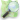

File:Baden-Baden 10-2015 img59 Casino.jpg

Original file (4,065 × 2,286 pixels, file size: 6.51 MB, MIME type: image/jpeg)
Captions
Captions
| Description |
English: The Casino in Baden-Baden (BW, Germany).
Deutsch: Das Casino in Baden-Baden (BW, Deutschland). Das Foto zeigt den Wintergarten.
Русский: Казино в Баден-Бадене (БВ, Германия). |
|||||||||||
| Date | ||||||||||||
| Source | Own work | |||||||||||
| Author | A.Savin | |||||||||||
| Permission (Reusing this file) |
This file is licensed under the Creative Commons Attribution-Share Alike 3.0 Unported, 2.5 Generic, 2.0 Generic and 1.0 Generic license.
|
.svg/40px-Flag_of_Russia_(democratic%2c_3-2).svg.png)
{kind=link}
{kind=link}
{kind=link}
{kind=link}
{kind=link}
{kind=link}
| Object location |  | View this and other nearby images on: OpenStreetMap |
|---|
{kind=link}
File history
Click on a date/time to view the file as it appeared at that time.
| Date/Time | Thumbnail | Dimensions | User | Comment | |
|---|---|---|---|---|---|
| current | 00:11, 17 October 2015 | | 4,065 × 2,286 (6.51 MB) | A.Savin (talk | contribs) | {{User:A.Savin/Photo |Description= {{en|The Casino in Baden-Baden (BW, Germany).}} {{de|Das Casino in Baden-Baden (BW, Deutschland). Das Foto zeigt den Wintergarten.}} {{ru|Казино в Баден-Бадене (БВ, Германия).}} |Year=2015... |
You cannot overwrite this file.
File usage on Commons
The following 3 pages use this file:
File usage on other wikis
The following other wikis use this file:
- Usage on ba.wikipedia.org
- Usage on de.wikipedia.org
- Usage on en.wikipedia.org
- Usage on ja.wikipedia.org
- Usage on ru.wikipedia.org
- Usage on ru.wikivoyage.org
- Usage on sl.wikipedia.org
- Usage on sq.wikipedia.org
- Usage on www.wikidata.org
{kind=link}